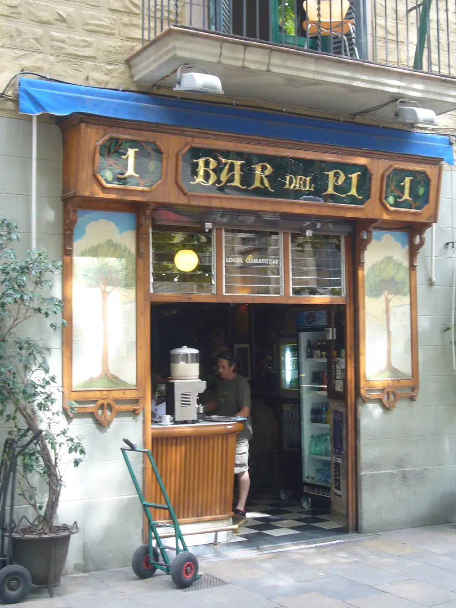
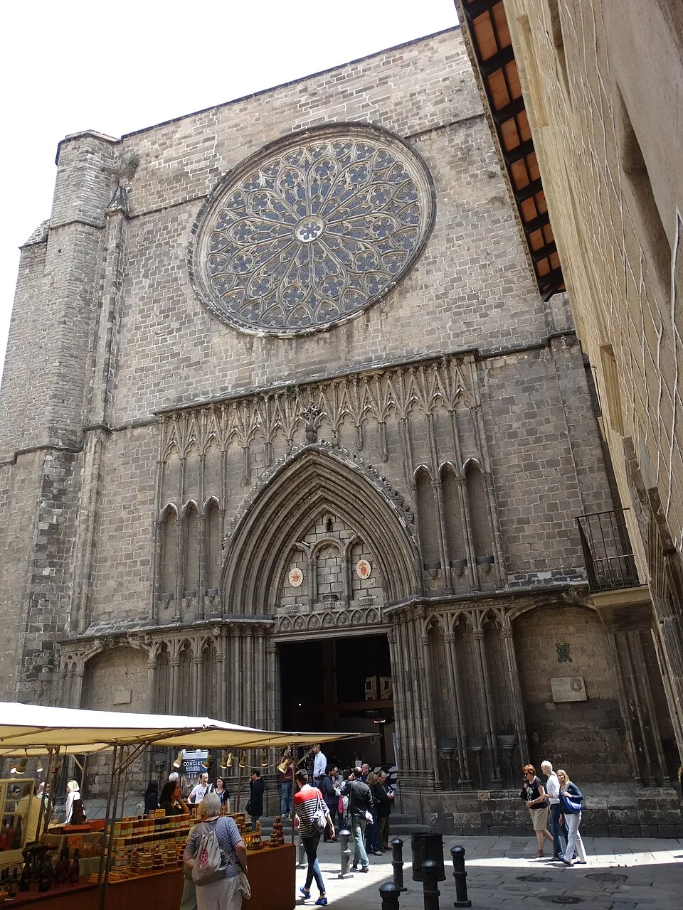
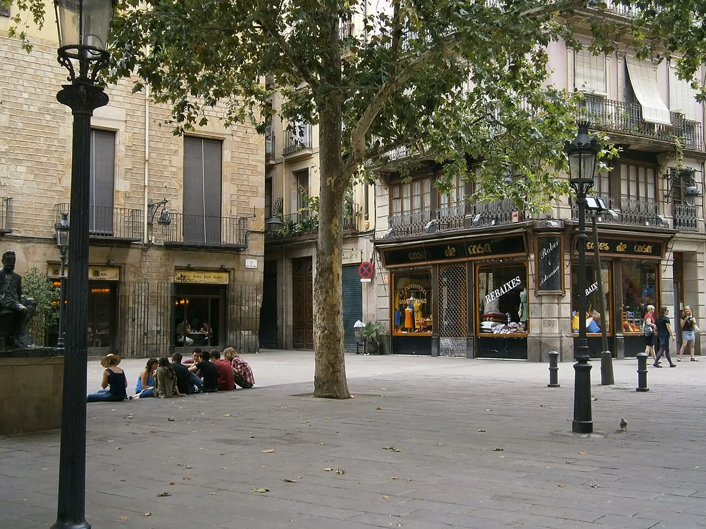

En la plaza más bohemia del Gòtic, a la sombra de una basílica gótica del siglo XIV. Tapas catalanas, vermut Miró de Reus servido del grifo y una terraza que mira directamente al rosetón de diez metros más grande de Cataluña.


Pocos rincones de Barcelona reúnen tantos siglos en tan pocos metros cuadrados. La Plaça de Sant Josep Oriol ocupa el lugar donde se enterraba a los feligreses de la basílica desde el siglo XIV — un cementerio convertido hoy en uno de los espacios más vivos del Barri Gòtic.
A un costado se alza la basílica de Santa Maria del Pi, levantada entre 1319 y 1391, con su rosetón gótico de diez metros — el mayor de Cataluña — y un campanario octogonal que se ve desde media ciudad. Al otro lado, la terraza del Bar del Pi, abierta a la piedra dorada de la fachada lateral.
Cada sábado y domingo la plaza se llena de caballetes: los pintores del Pi exponen sus cuadros al aire libre, los músicos clásicos y de jazz dan recitales improvisados, y los locales y viajeros se mezclan en una atmósfera que algunos comparan con la Place du Tertre de Montmartre, aunque en versión gótica y mediterránea.
El gesto más catalán del mundo: pan de payés tostado, ajo, tomate de colgar y aceite virgen. Servido con embutido del país o solo, para abrir boca.
«La mejor tortilla», escriben los clientes en los comentarios. Tradicional, jugosa, con cebolla pochada largo rato. Una sola receta, ningún atajo.
Bolas de patata rellenas con carne picada, fritas al momento, bañadas en salsa brava y un toque de alioli suave. Para mojar con pan, sin servilleta.
Bacalao desalado y desmigado a mano, con tomate, cebolla, pimiento, aceitunas negras y un buen chorro de aceite. Cataluña antigua en un plato frío.
Bechamel que se deshace, corazón cremoso, costra que cruje. Las hacen aquí, una a una, y se notan. Cinco por ración para no discutir.
Tirado del barril, con su rodaja de naranja y su aceituna. El vermut catalán por excelencia, el que se pedía aquí ya en los años cuarenta.
— La carta cambia con la temporada. Pregunte por los calçots en invierno y los tomates de payés en verano —

Si hay un sitio donde merece la pena pedir el aperitivo, es esta terraza. Las mesas están sobre el adoquinado de la plaza, las farolas se encienden poco a poco al caer la tarde, y al fondo se recorta la silueta gótica de Santa Maria del Pi.
Sentarse aquí no es sentarse en cualquier bar. Es sentarse en una de las plazas más fotografiadas de Barcelona, en uno de los pocos bares centenarios que aún quedan en pie en el Gòtic.
El año en que Pepita i Enric, llegados del Priorat, abrieron este bar en un edificio del siglo XVIII. Dicen que el día de la apertura tiraron las llaves al mar — para no cerrarlo jamás. Casi un siglo después, sigue abierto.
Por aquí pasaron Hemingway, Joan Manuel Serrat, Mariscal y Rafael Alberti, cuyos dibujos y carteles originales todavía cuelgan de las paredes. En julio de 1936 se fundó dentro el Partit Socialista Unificat de Catalunya: una placa lo recuerda. El Bar del Pi es Establiment Emblemàtic de Barcelona — un patrimonio que se come, se bebe y se conversa.
Plaça de Sant Josep Oriol, 1
Esto era una demo
Esta web era una muestra de lo que podríamos hacer para Bar del Pi. Si te ha gustado y quieres una para tu negocio, escríbenos — Pedro te responde personalmente y la web final la adaptamos al 100% a tu gusto.
Pedro Núñez · Impacto Digital